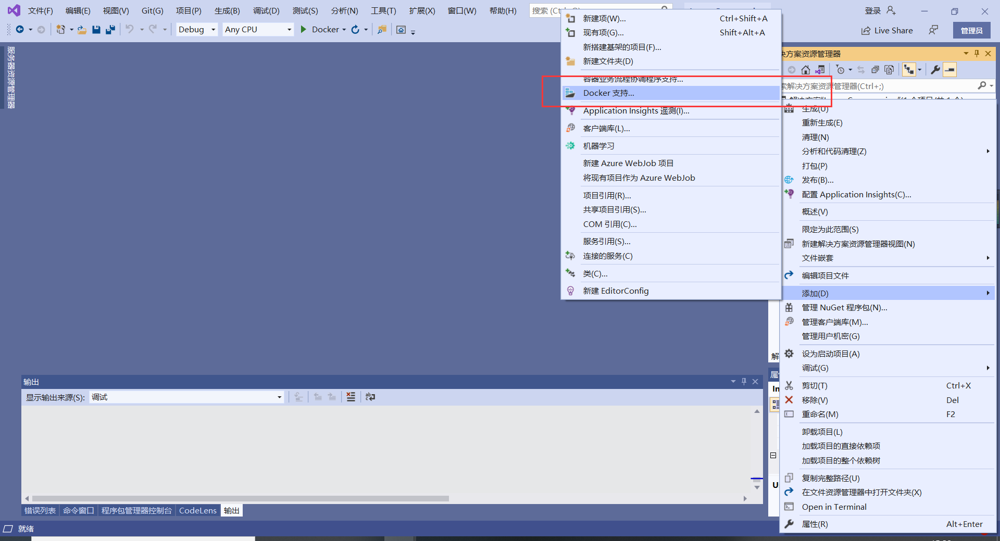
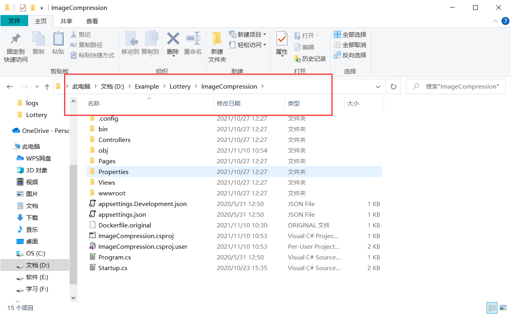
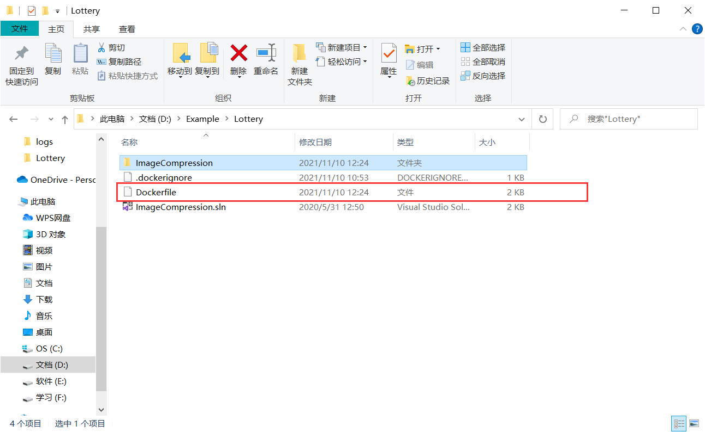
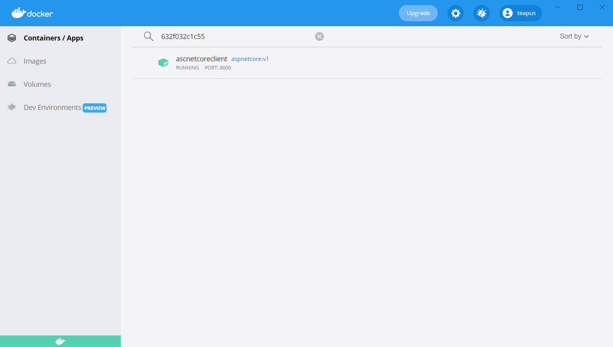
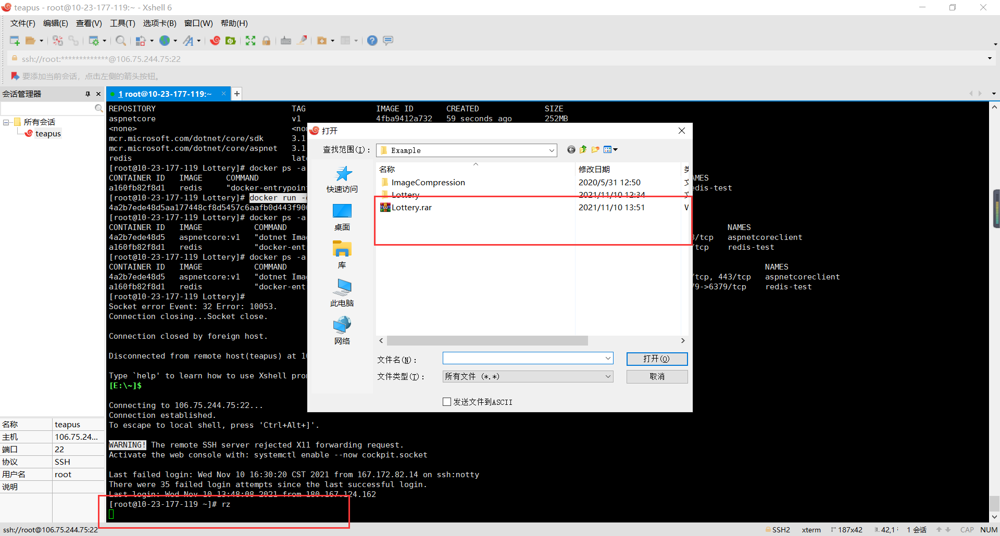
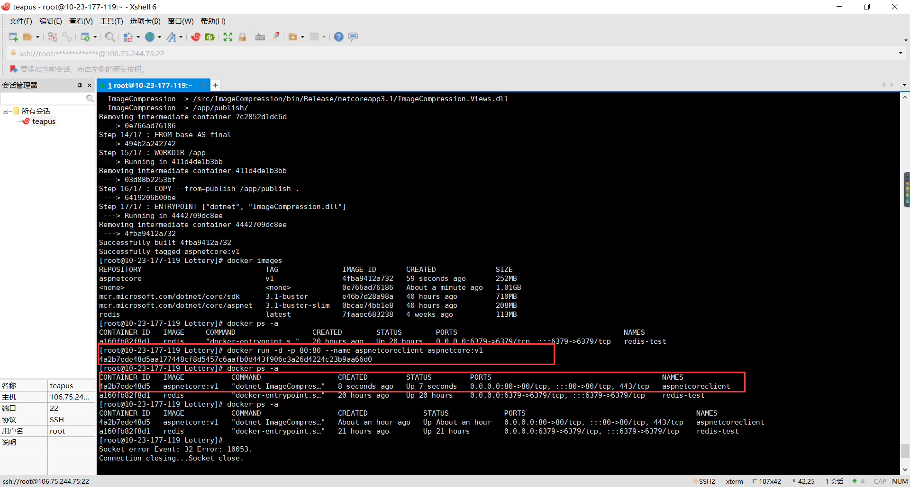
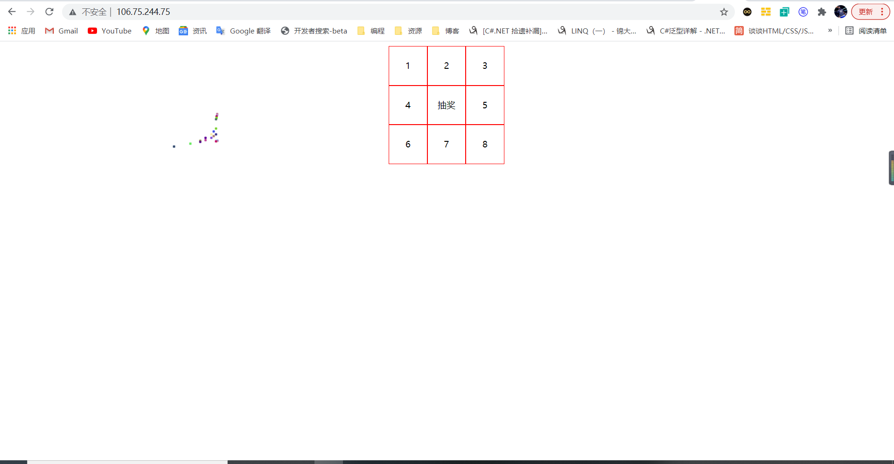

aspNetCore 跨平台之后，自己弄了一台Linux服务器。想着部署到上面试试看。作为之前从未接触Linux的小白。一番折腾可不容易，记录下方便以后查阅
# 使用 Docker 生成镜像后部署
我当前的这台服务器的版本是 Centos8.3
1. 首先我们打开自己要部署的项目，使用 vs 生成一个 DockerFile 文件

因为我本地也已经安装过 Docker 了，所以我现在本地尝试一下
# 生成一个镜像
docker build -t aspnetcore:v1 |
在这命令就踩了很多坑，最后发现默认生成的 DockFile 文件是在当前这个文件夹下面 (这边没有我已经将他去除)
我们将DockerFile文件向上移动一级和.sln文件同级 这样就可以成功了

# 运行一个容器
docker run -d -p 8000:80 --name aspnetcoreclient aspnetcore:v1 |
本地运行成功

# 部署到 Linux 服务器上
作为一个 Linux 小白一些命令只能从基础学起
# 以下一些命令需要你已经安装了 Docker
# Linux 安装 lrzsz (下载文件)
yum install -y lrzsz |
# 如何将本地文件上传到服务器上 (windows 上传到 Linux)
在这里我连接服务器的软件是 Xshell 6

将要上传的文件夹压缩后就可以上传了
具体的操作流程
Linux 服务器上安装解压 rar 安装包操作步骤
Linux 文件基本命令
在 Linux 执行命令后

当前是执行在 80 端口

这就是一个最简单的 asp.netCore 的发布到 Linux 的过程